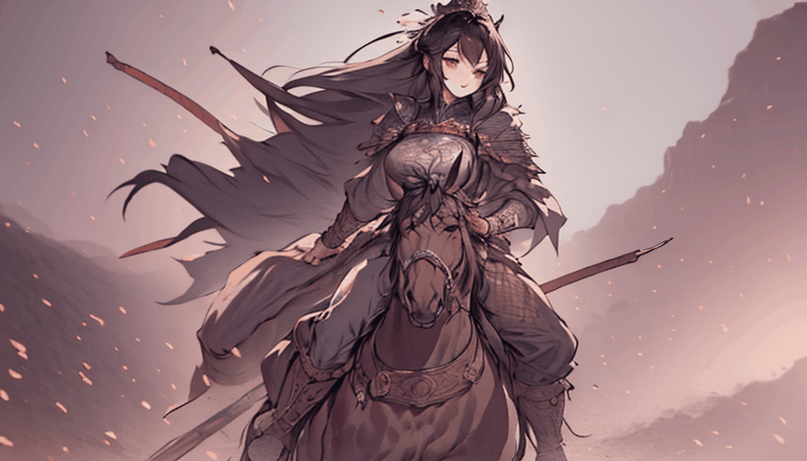
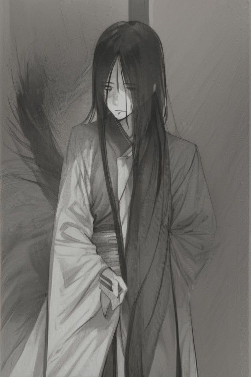

生成完整角色動畫 - 1

使用提示詞:
"0" :"masterpiece, best quality, wide shot, full body, full scene, qima, horseback riding, cavalry charge, 1 Chinese female general riding a galloping war horse across an open sandy battlefield, holding a long spear forward, spear clearly visible, full horse body clearly visible, full rider clearly visible, side view, horse running from left to right, dust under hooves, distant war banners, battlefield ground, ancient Chinese lamellar armor, Chinese general, long cloak flowing, black and white ink wash style, shuimobysim, xuan paper texture, clear readable silhouette",
"8" :"wide battlefield shot, qima, horse riding, cavalry, female Chinese general on horseback, war horse galloping fast, long spear diagonal across the frame, spear tip visible, full horse legs visible, open desert battlefield, dust clouds, banners and distant soldiers, dynamic motion lines, Chinese armor, black white gray ink brush, dry brush strokes, xuan paper, main subject centered and large",
"16" :"same character and same horse, side view cavalry charge, Chinese woman general riding a war horse at full speed, holding long spear forward, open sandy battlefield with war flags, no buildings, no wooden wall, full horse and rider in frame, ink wash illustration, monochrome, strong outline, calligraphic motion, dust trail",
"24" :"final wide shot, female Chinese general cavalry charge, full horse body visible, long spear held forward, battlefield sand and banners, galloping war horse, wind-blown cloak, ancient Chinese armor, black and white Chinese ink painting, shuimobysim, xuan paper, readable subject, not close up, not portrait"
使用負面提示詞:
(worst quality, low quality, bad quality:1.25), empty landscape, abstract gray wash only, background only, no character, no rider, no horse, missing main character, missing rider, missing horse, horse only, rider only, on foot, standing pose, portrait only, close-up face, close-up body, waist-up portrait, indoor, interior, building, wooden wall, wooden boards, fence, palace wall, window, room, no battlefield, no ground, no sand, no spear, missing spear, sword instead of spear, gun, cropped horse, cropped rider, cropped spear, out of frame, tiny subject, face covered by ink, excessive ink covering subject, unreadable silhouette, messy black blobs, deformed horse, extra horse legs, broken horse anatomy, deformed face, bad anatomy, extra limbs, missing limbs, bad hands, photorealistic, realistic skin, 3d render, game cg, glossy armor, colorful, red, blue, modern clothes, kimono, samurai armor, Japanese shrine, European knight armor, western cowboy, text, watermark, logo, gore, blood splatter
生成完整角色動畫 - 2
使用提示詞:
"0" :"masterpiece, best quality, 2d anime illustration, Chinese ink wash painting, moxin style, monochrome black white gray, clean xuan paper texture, elderly male taoist master, masculine old man, long white hair, long white beard, thick eyebrows, square jaw, weathered face, stern calm expression, broad shoulders, upright spine, plain heavy daoist robe, holding a wooden staff, full body, large centered subject, subject occupies 70 percent of frame, heavy grounded stance, clear masculine silhouette, clean ink landscape background, strong contrast, controlled ink brush strokes, no fog",
"10" :"masterpiece, best quality, 2d anime illustration, Chinese ink wash painting, moxin style, monochrome black white gray, clean xuan paper texture, elderly male taoist master, masculine old man, long white hair, long white beard, thick eyebrows, square jaw, weathered face, stern calm expression, broad shoulders, upright spine, plain heavy daoist robe, holding a wooden staff, full body, large centered subject, subject occupies 70 percent of frame, begins walking forward, slow firm step, staff touches the ground, shoulders steady, clear masculine silhouette, strong contrast, controlled ink brush strokes, no fog",
"20" :"masterpiece, best quality, 2d anime illustration, Chinese ink wash painting, moxin style, monochrome black white gray, clean xuan paper texture, elderly male taoist master, masculine old man, long white hair, long white beard, thick eyebrows, square jaw, weathered face, stern calm expression, broad shoulders, upright spine, plain heavy daoist robe, holding a wooden staff, full body, large centered subject, subject occupies 70 percent of frame, walking forward slowly, heavy grounded steps, no hip sway, staff planted firmly, robe moves slightly with each step, clear masculine silhouette, strong contrast, no fog",
"30" :"masterpiece, best quality, 2d anime illustration, Chinese ink wash painting, moxin style, monochrome black white gray, clean xuan paper texture, elderly male taoist master, masculine old man, long white hair, long white beard, thick eyebrows, square jaw, weathered face, stern calm expression, broad shoulders, upright spine, plain heavy daoist robe, holding a wooden staff, full body, large centered subject, subject occupies 70 percent of frame, right foot stepping forward, slow firm walking, staff tapping stone path, stable body posture, clear masculine silhouette, minimal ink mountain background, strong contrast, no fog",
"40" :"masterpiece, best quality, 2d anime illustration, Chinese ink wash painting, moxin style, monochrome black white gray, clean xuan paper texture, elderly male taoist master, masculine old man, long white hair, long white beard, thick eyebrows, square jaw, weathered face, stern calm expression, broad shoulders, upright spine, plain heavy daoist robe, holding a wooden staff, full body, large centered subject, subject occupies 70 percent of frame, steady walking motion, shoulders remain level, no waist twist, no hip sway, staff supports the step, robe fabric feels heavy, clear masculine silhouette, strong contrast, no fog",
"50" :"masterpiece, best quality, 2d anime illustration, Chinese ink wash painting, moxin style, monochrome black white gray, clean xuan paper texture, elderly male taoist master, masculine old man, long white hair, long white beard, thick eyebrows, square jaw, weathered face, stern calm expression, broad shoulders, upright spine, plain heavy daoist robe, holding a wooden staff, full body, large centered subject, subject occupies 70 percent of frame, walking on stone path, firm slow pace, staff touches ground before each step, beard moves slightly, robe folds visible, clear masculine silhouette, strong contrast, no fog",
"60" :"masterpiece, best quality, 2d anime illustration, Chinese ink wash painting, moxin style, monochrome black white gray, clean xuan paper texture, elderly male taoist master, masculine old man, long white hair, long white beard, thick eyebrows, square jaw, weathered face, stern calm expression, broad shoulders, upright spine, plain heavy daoist robe, holding a wooden staff, full body, large centered subject, subject occupies 70 percent of frame, left foot stepping forward, slow heavy walking cycle, staff planted firmly, dignified posture, clear masculine silhouette, sparse ink bamboo background, strong contrast, no fog",
"70" :"masterpiece, best quality, 2d anime illustration, Chinese ink wash painting, moxin style, monochrome black white gray, clean xuan paper texture, elderly male taoist master, masculine old man, long white hair, long white beard, thick eyebrows, square jaw, weathered face, stern calm expression, broad shoulders, upright spine, plain heavy daoist robe, holding a wooden staff, full body, large centered subject, subject occupies 70 percent of frame, grounded elder walking, firm footsteps, no floating motion, no graceful dance, staff tapping stone path, steady shoulders, clear masculine silhouette, strong contrast, no fog",
"80" :"masterpiece, best quality, 2d anime illustration, Chinese ink wash painting, moxin style, monochrome black white gray, clean xuan paper texture, elderly male taoist master, masculine old man, long white hair, long white beard, thick eyebrows, square jaw, weathered face, stern calm expression, broad shoulders, upright spine, plain heavy daoist robe, holding a wooden staff, full body, large centered subject, subject occupies 70 percent of frame, calm firm walking pose, robe moves only slightly, staff supports body weight, dignified old master presence, clear masculine silhouette, high contrast ink background, no fog",
"90" :"masterpiece, best quality, 2d anime illustration, Chinese ink wash painting, moxin style, monochrome black white gray, clean xuan paper texture, elderly male taoist master, masculine old man, long white hair, long white beard, thick eyebrows, square jaw, weathered face, stern calm expression, broad shoulders, upright spine, plain heavy daoist robe, holding a wooden staff, full body, large centered subject, subject occupies 70 percent of frame, walking forward toward camera, slow firm pace, no hip sway, staff planted on stone path, robe settling heavily, clear masculine silhouette, strong contrast, no fog",
"100" :"masterpiece, best quality, 2d anime illustration, Chinese ink wash painting, moxin style, monochrome black white gray, clean xuan paper texture, elderly male taoist master, masculine old man, long white hair, long white beard, thick eyebrows, square jaw, weathered face, stern calm expression, broad shoulders, upright spine, plain heavy daoist robe, holding a wooden staff, full body, large centered subject, subject occupies 70 percent of frame, final heavy step forward, staff taps the ground, shoulders steady, dignified posture, clear masculine silhouette, quiet ink mountain path, strong contrast, no fog",
"110" :"masterpiece, best quality, 2d anime illustration, Chinese ink wash painting, moxin style, monochrome black white gray, clean xuan paper texture, elderly male taoist master, masculine old man, long white hair, long white beard, thick eyebrows, square jaw, weathered face, stern calm expression, broad shoulders, upright spine, plain heavy daoist robe, holding a wooden staff, full body, large centered subject, subject occupies 70 percent of frame, stops after walking, staff planted firmly, robe settles down, calm stern old master, clear masculine silhouette, quiet ink mountain path, strong contrast, controlled ink brush strokes, no fog"
使用負面提示詞:
(bad quality, worst quality:1.3), lowres, blurry, noisy, jpeg artifacts, overexposed, washed out, white void, white fog, heavy fog, mist, smoke covering subject, low contrast, tiny subject, distant subject, empty frame, subject too small, cropped body, out of frame, unclear face, deformed face, bad anatomy, bad hands, extra fingers, missing fingers, extra limbs, duplicate body, broken legs, floating body, unstable walking, feminine male, girly posture, hip sway, delicate body, slim waist, soft feminine face, young face, beautiful girl, woman, female, makeup, lipstick, long eyelashes, elegant female walk, graceful dance, light floating steps, crossdressing, dress, skirt, modern clothes, armor, horse, messy ink splashes covering character, excessive ink stains, abstract background only
生成完整角色動畫 - 3

使用提示詞:
"0" :"masterpiece, best quality, 2d anime illustration, Chinese ink wash painting, moxin style, monochrome black white gray, clean xuan paper texture, lone male swordsman, black ancient Chinese robe, sharp masculine face, long black hair tied back, calm cold expression, standing in bamboo forest, one hand resting on sword hilt, full body, large centered subject, subject occupies 75 percent of frame, clear face, clear sword, strong silhouette, high contrast, clean background, controlled ink brush strokes, no fog",
"4" :"masterpiece, best quality, 2d anime illustration, Chinese ink wash painting, moxin style, monochrome black white gray, clean xuan paper texture, lone male swordsman, black ancient Chinese robe, sharp masculine face, long black hair tied back, cold focused eyes, standing in bamboo forest, one hand firmly gripping sword hilt, left hand holding scabbard, full body, large centered subject, subject occupies 75 percent of frame, stable posture, clear face, clear sword, strong silhouette, high contrast, no fog",
"8" :"masterpiece, best quality, 2d anime illustration, Chinese ink wash painting, moxin style, monochrome black white gray, clean xuan paper texture, lone male swordsman, black ancient Chinese robe, sharp masculine face, long black hair tied back, cold focused eyes, slowly drawing sword from scabbard, sword blade partially visible, full body, large centered subject, subject occupies 75 percent of frame, robe moves slightly, clear face, strong silhouette, high contrast, no fog",
"12" :"masterpiece, best quality, 2d anime illustration, Chinese ink wash painting, moxin style, monochrome black white gray, clean xuan paper texture, lone male swordsman, black ancient Chinese robe, sharp masculine face, long black hair tied back, cold focused eyes, drawing sword halfway, sword blade bright and clear, left hand holding scabbard, right hand pulling blade, full body, large centered subject, subject occupies 75 percent of frame, stable body, strong silhouette, high contrast, no fog",
"16" :"masterpiece, best quality, 2d anime illustration, Chinese ink wash painting, moxin style, monochrome black white gray, clean xuan paper texture, lone male swordsman, black ancient Chinese robe, sharp masculine face, long black hair tied back, cold focused eyes, sword fully drawn, blade held diagonally across body, full body, large centered subject, subject occupies 75 percent of frame, sharp sword reflection, robe fabric heavy, clear face, strong silhouette, high contrast, no fog",
"20" :"masterpiece, best quality, 2d anime illustration, Chinese ink wash painting, moxin style, monochrome black white gray, clean xuan paper texture, lone male swordsman, black ancient Chinese robe, sharp masculine face, long black hair tied back, cold focused eyes, fast sword slash begins, blade arc visible, clean white sword trail, controlled ink splash behind blade only, full body, large centered subject, subject occupies 75 percent of frame, dynamic but clear pose, strong silhouette, high contrast, no fog",
"24" :"masterpiece, best quality, 2d anime illustration, Chinese ink wash painting, moxin style, monochrome black white gray, clean xuan paper texture, lone male swordsman, black ancient Chinese robe, sharp masculine face, long black hair tied back, cold focused eyes, sword slash across the frame, bright blade arc completed, robe and hair moving slightly, full body, large centered subject, subject occupies 75 percent of frame, clear sword trail, strong silhouette, high contrast, no fog",
"28" :"masterpiece, best quality, 2d anime illustration, Chinese ink wash painting, moxin style, monochrome black white gray, clean xuan paper texture, lone male swordsman, black ancient Chinese robe, sharp masculine face, long black hair tied back, cold calm expression, sword slash completed, blade extended forward then lowering, robe settling, ink leaves falling, full body, large centered subject, subject occupies 75 percent of frame, clear face, clear sword, strong silhouette, high contrast, no fog",
"31" :"masterpiece, best quality, 2d anime illustration, Chinese ink wash painting, moxin style, monochrome black white gray, clean xuan paper texture, lone male swordsman, black ancient Chinese robe, sharp masculine face, long black hair tied back, calm cold expression, standing still in bamboo forest after sword slash, sword lowered beside body, final stable pose, full body, large centered subject, subject occupies 75 percent of frame, clear face, clear sword, strong silhouette, clean ink background, high contrast, controlled ink brush strokes, no fog"
使用負面提示詞:
(bad quality, worst quality:1.3), lowres, blurry, noisy, jpeg artifacts, overexposed, washed out, white void, white fog, heavy fog, mist, smoke covering subject, low contrast, tiny subject, distant subject, empty frame, subject too small, cropped body, out of frame, unclear face, deformed face, bad anatomy, bad hands, extra fingers, missing fingers, extra limbs, duplicate body, broken legs, floating body, unstable pose, sword missing, tiny sword, unclear sword, broken sword, sword fused with hand, extra swords, feminine male, girly posture, hip sway, delicate body, soft feminine face, young girl, woman, female, makeup, lipstick, long eyelashes, dress, skirt, modern clothes, school uniform, armor, horse, dragon, messy ink splashes covering character, excessive ink stains, abstract background only